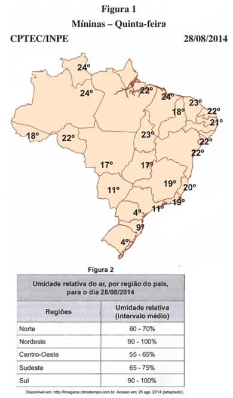
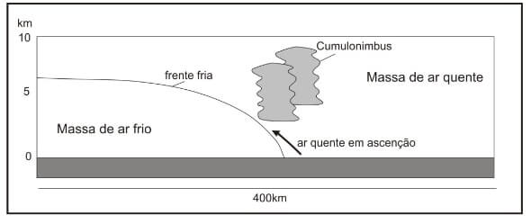
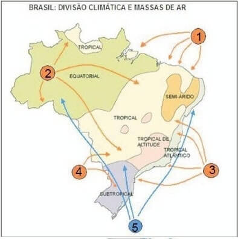
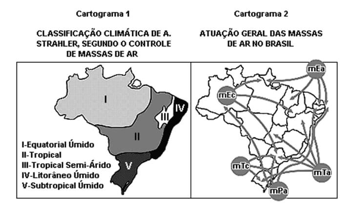
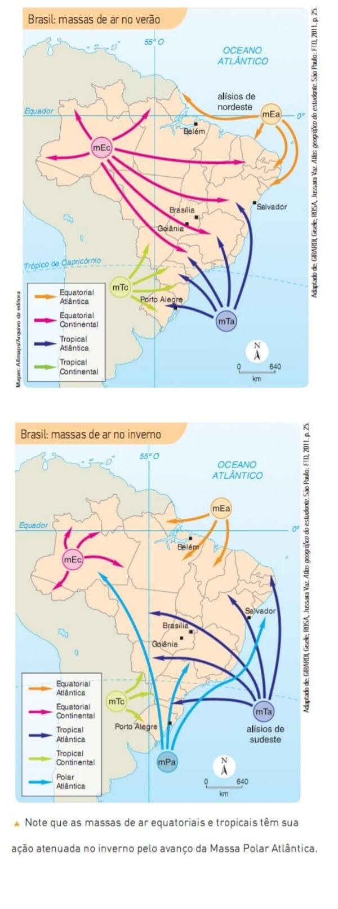

Conteúdo: Massas de ar: Equatorial continental, Equatorial Atlântica, Tropical Atlântica, Polar Atlântica, tropical continental.
Objetivo: Identificar e localizar as principais massas de ar do Brasil.
Questão 01
(2019) sobre o conceito de massas de ar, é correto afirmar que:
a) as massas de ar deslocam-se no planeta Terra sempre em sentido anti-horário.
b) as massas de ar são porções do ar atmosférico que adquirem características do local em que se originaram e deslocam-se pela atmosfera.
c) as massas de ar não se deslocam pela atmosfera, influenciando sempre a mesma região.
d) as massas de ar só se originam no oceano em consequência da maritimidade, que gera uma quantidade enorme de ventos responsáveis pelo surgimento das grandes massas de ar.
e) as massas de ar são porções do ar atmosférico com características próprias e que não sofrem influência da região em que se encontram.
Comentário:
Colocar os comentários aqui.
Questão 02
(2019) A “friagem” consiste na queda brusca de temperatura na Amazônia Ocidental. Sobre esse fenômeno pode-se afirmar que:
I – O relevo baixo de planície facilita a incursão de massa e de ar frio que atinge a Amazônia.
II – A massa de ar responsável pela ocorrência de friagem é a tropical atlântica.
III – A friagem ocorre no inverno.
De acordo com as afirmativas, assinale a alternativa correta.
a) somente o item I está correto.
b) os itens II e III estão corretos.
c) os itens I e II estão corretos.
d) os itens I e III estão corretos.
e) Todos os itens estão corretos.
Questão 03
(ENEM 2017)

No dia em que foram colhidos os dados meteorológicos apresentados, qual fator climático foi determinante para explicar os índices de umidade relativa do ar nas regiões Nordeste e Sul?
a) Altitude, que forma barreiras naturais.
b) Vegetação, que afeta a incidência solar.
c) Massas de ar, que provocam precipitações.
d) Correntes marítimas, que atuam na troca de calor.
e) Continentalidade, que influencia na amplitude da temperatura
Os dados meteorológicos apresentados quanto à umidade elevada para as regiões Nordeste e Sul, para o período observado (28/08/2014), devido à atuação das massas de ar que provocam as precipitações.
a) Incorreta. Nas duas regiões (Nordeste e Sul) destacadas pelo enuncido verifica-se um aumento da umidade relativa do ar. A altitude interfere no clima de duas maneiras: impedindo a passagem de massas de ar gerando áreas mais secas ou diminuindo a temperatura à medida em que a altitude aumenta sendo, portanto, incorreto associar esse fator aos dados apresentados na tabela.
b) Incorreta. A vegetação das grandes florestas tropicais pode elevar a umidade relativa do ar ao realizar a evapotranspiração, porém, as regiões destacadas não possuem grandes florestas tropicais (no caso do Sudeste, devido ao desmatamento da Mata Atlântica).
c) Correta. A elevação da umidade relativo do ar no Nordeste e Sul nos meses de inverno pode ocorrer por conta da atuação das massas de ar. No caso do Nordeste o encontro da Massa Polar Atlântica com a Massa Tropical Atlântica resulta em chuvas na Zona da Mata nordestina, já no caso do Sul, a chegada da Massa Polar Atlântica causa chuvas frontais.
d) Incorreta. As correntes marítimas de fato atuam na troca de calor e, principalmente, na umidade do ar das áreas próximas ao litoral. Porém, a atuação dessas correntes no litoral brasileiro pouco interfere no aumento ou diminuição da umidade relativa do ar em escala nacional.
e) Incorreta. A continentalidade é um fator que interfere nas áreas do interior do Brasil, deixando o clima mais seco, e não é responsável pelo aumento da umidade no Nordeste e Sul.
Questão 04
(Unicamp 2013) O esquema abaixo representa a entrada de uma frente fria, uma condição atmosférica muito comum, especialmente nas regiões Sul e Sudeste do Brasil. Sobre esta condição é correto afirmar que:

a) é típica de inverno, quando massas frias atravessam essas regiões, provocando inicialmente uma precipitação e, na sequência, queda da temperatura e tempo mais seco.
b) Trata-se da chegada de uma massa quente, que ocorre tanto no verão quanto no inverno, provocando intensas chuvas, sendo comuns a ocorrência de tempestades e o aumento significativo na temperatura.
c) O contato entre as massas de ar indica fortes chuvas, de tipo orográficas, que permanecem estacionadas num mesmo ponto durante vários dias.
d) as precipitações de tipo convectivas ocorrem especialmente nos meses de verão, sendo comum a ocorrência de chuvas de granizo no final da tarde.
a) Correta. No inverno, especialmente nas regiões Sul e Sudeste do Brasil, atua a Massa Polar Atlântica (mPa) que, ao entrar nessas regiões, encontra uma massa de ar quente e forma uma frente fria. Esse encontro causa precipitação pela ascensão do ar quente, e depois, a queda da temperatura e tempo mais seco pela instalação da massa fria.
b) Incorreta. Trata-se da chegada de uma massa fria no inverno, provocando chuvas e diminuição da temperatura.
c) Incorreta. As chuvas orográficas são causadas pelo relevo e não pelo encontro de duas massas de ar que causam as chuvas frontais.
d) Incorreta. As chuvas de convecção são causadas pela evapotranspiração ao longo do dia no verão. Porém, o esquema mostra uma frente fria, e não chuvas convectivas.
Questão 05
(UDESC 2011) observe o mapa abaixo.

Analise as proposições sobre as massas de ar que atuam no Brasil, representadas no mapa pelos números arábicos.
I. O número 1 representa a Massa Equatorial Atlântica.
II. O número 2 representa a Massa Equatorial Amazônica.
III. O número 3 representa a Massa Tropical Atlântica.
IV. O número 4 representa a Massa Tropical Continental.
V. O número 5 representa a Massa Polar Atlântica.
Assinale a alternativa correta.
a) somente as afirmativas I, III, IV e V são verdadeiras.
b) somente as afirmativas I, II e V são verdadeiras.
c) somente as afirmativas I, II e III são verdadeiras.
d) somente as afirmativas IV e V são verdadeiras.
e) Todas as afirmativas são verdadeiras.
Questão 06
(UFPR 2009) nesta terça-feira (15/09/09), áreas de instabilidade que se deslocam pelo norte da Argentina devem chegar ao Brasil a partir da tarde e voltam a provocar pancadas de chuva no oeste e norte do RS, no centro-oeste de SC, no oeste do PR e no sul de MS, onde tem-se uma massa de ar quente e úmida.
O texto acima refere-se à previsão do tempo para o dia 15/09/09, realizada pelo Centro de Previsão do Tempo e Estudos Climáticos do Instituto Nacional de Pesquisas Espaciais. Levando em consideração os dados apresentados, assinale a alternativa correta.
a) A Frente Polar Atlântica, principal área de instabilidade da América do Sul meridional, é responsável pelas chuvas previstas no texto.
b) as áreas de instabilidade são geradas por nuvens de desenvolvimento vertical, por isso a previsão de pancadas de chuva.
c) as pancadas de chuva são típicas dos climas úmidos, muito bem representados pelas regiões mencionadas no texto.
d) O deslocamento da massa de ar tropical em direção a leste é que gera as áreas de instabilidade mencionadas no texto.
e) A massa de ar quente e úmida que se encontra sobre o estado do Mato Grosso do Sul corresponde à massa tropical continental, geradora de chuvas em pancadas.
Questão 07
(UFRN 2004) os cartogramas 1 e 2 representam, respectivamente, a classificação climática do Brasil, segundo Arthur Strahler, e as massas de ar que atuam no território brasileiro.

(Adaptado de: VESENTINI, J. W. "Brasil: sociedade e espaço". São Paulo: Ática, 2016. p. 242-243.)
a) na maior parte do território brasileiro, predominam os climas quentes, tendo em vista a atuação das Massas Equatoriais e Tropicais.
b) no encontro da Massa Tropical Continental com a Massa Polar Atlântica, forma-se a Frente Polar Atlântica, responsável pelas chuvas de verão no semiárido.
c) nas áreas tropicais, atuam massas de ar quentes e frias, ocorrendo fortes precipitações pluviométricas e o fenômeno das geadas.
d) na região Sul do Brasil, onde predomina o clima subtropical, a Massa Polar Atlântica é responsável pelos invernos rigorosos, provocando o fenômeno da friagem.
Questão 08
(PUC-PR 2001) A atmosfera constitui um sistema caótico. O ar está em constante movimento, em consequência, especialmente, das diferenças de pressão e do movimento de rotação da Terra. A previsão meteorológica é complicada, exigindo grandes investimentos em tecnologia e instrumentos.
I. Na zona intertropical, onde está a maior parte do Brasil, as altas pressões dominantes facilitam a verificação das condições atmosféricas pela estabilidade reinante.
II. O que chamamos de clima é o conjunto de variações do tempo durante longo período.
III. Embora atinja grandes porções da atmosfera, a influência das massas de ar na determinação dos tipos climáticos é quase nula, pois essas massas de ar são geralmente estáticas.
IV. Tratando-se de assunto meteorológico, tempo significa estado momentâneo da atmosfera em um local.
Assinale as afirmações corretas.
a) I e IV.
b) I e II.
c) III e IV.
d) II e IV.
e) I e III.
Questão 09
(UFG) Observe os mapas a seguir.

A dinâmica das massas de ar é um dos fatores que explica a caracterização climática de uma área. A leitura e a interpretação dos mapas indicam que o clima do território goiano é influenciado pela atuação da massa.
a) Equatorial continental no verão e Tropical atlântica no inverno.
b) Equatorial continental durante o ano todo.
c) Tropical atlântica no verão e Polar atlântica durante o inverno.
d) Equatorial continental no verão e Equatorial atlântica no inverno
e) Tropical atlântica durante o ano todo.
Questão 10
(Mackenzie–SP) Assinale a alternativa CORRETA sobre a dinâmica de massas de ar no Brasil.
a) A massa equatorial atlântica origina–se no Atlântico Norte e influencia o clima de todo o interior do país.
b) A massa tropical continental origina–se na Depressão do Chaco e provoca chuvas torrenciais de inverno no litoral sul e sudeste.
c) A massa tropical atlântica originária do Atlântico Sul atua principalmente na faixa litorânea desde o Nordeste até o sul do país.
e) A massa polar atlântica, originária da Antártica, tem atuação restrita ao extremo sul do país.